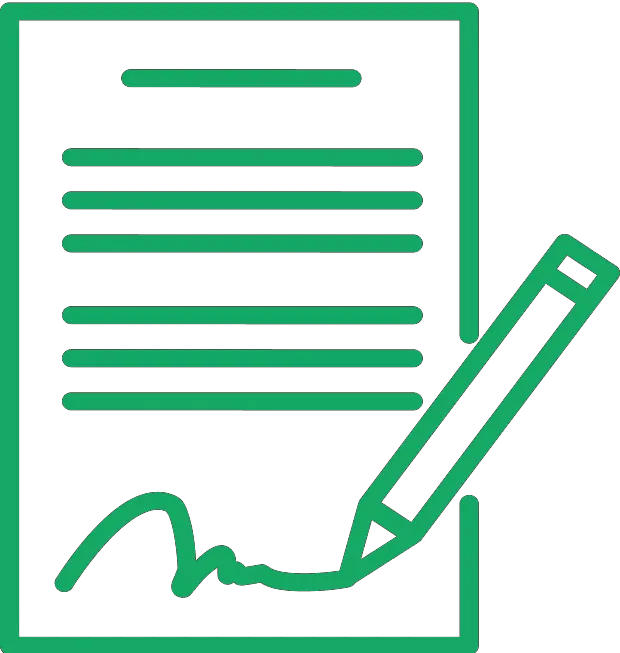
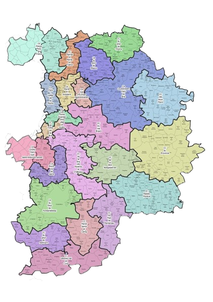
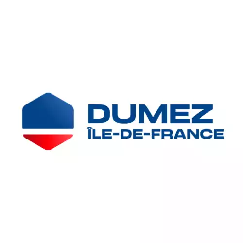
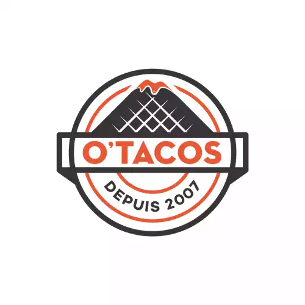
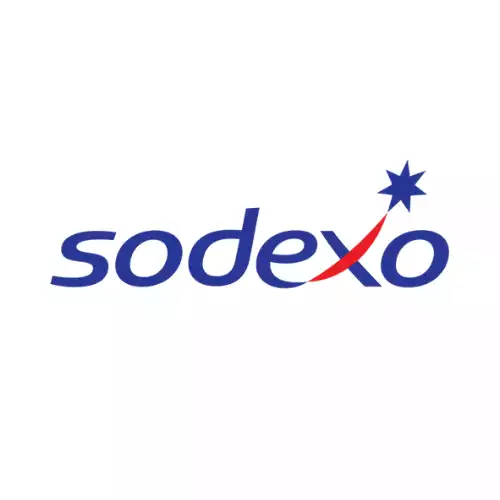
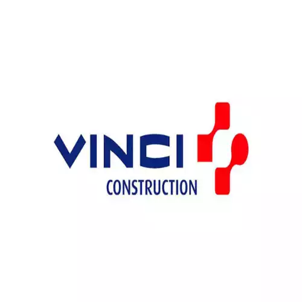
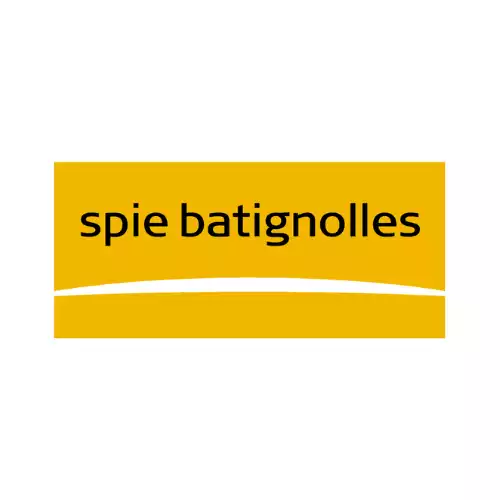

NOS SERVICES

Débouchez vos canalisations de tout engorgement avec notre service de debouchage de canalisation. Dotés d'une expertise technique pointue et d'une approche attentive, nous nous engageons à restaurer la fluidité de vos canalisations.
CONTACTEZ - NOUS
Offrez à vos canalisations un nettoyage en profondeur grâce à notre service de curage. Le curage régulier de vos canalisations permet de prévenir les obstructions et les dysfonctionnements. Faites confiance à notre équipe pour assurer le bon fonctionnement de votre assainissement individuel.
CONTACTEZ - NOUS
Plongez dans une perspective inédite de vos installations grâce à notre service de passage de caméra. Avec une expertise technique pointue et une approche méticuleuse, nous vous offrons une vision détaillée de l'intérieur de vos canalisations.
CONTACTEZ - NOUS
Avec une expertise spécialisée dans le pompage de fosses septiques, de bacs à graisse et le traitement des eaux usées, nous vous proposons des services complets pour assurer la propreté et le bon fonctionnement de vos installations.
CONTACTEZ - NOUS
Optimisez le contrôle de vos eaux usées avec notre service de pompe de relevage de pointe. Que ce soit pour les eaux usées domestiques ou industrielles, notre équipe dédiée assure une gestion efficace grâce à nos pompes de relevage de qualité supérieure.
CONTACTEZ - NOUS
En cas d'urgence, nous sommes là pour vous. Notre équipe d'experts en assainissement se déplace rapidement et efficacement pour répondre à vos besoins critiques. Que ce soit pour un débouchage urgent, une inspection par caméra ou toute autre intervention nécessaire, comptez sur nous pour intervenir rapidement et résoudre vos problèmes d'assainissement.
CONTACTEZ - NOUS
Débouchage des canalisations : Débouchez vos canalisations de tout engorgement avec notre service de debouchage de canalisation. Dotés d'une expertise technique pointue et d'une approche attentive, nous nous engageons à restaurer la fluidité de vos canalisations.
Nettoyage canalisations : Offrez à vos canalisations un nettoyage en profondeur grâce à notre service de curage. Le curage régulier de vos canalisations permet de prévenir les obstructions et les dysfonctionnements. Faites confiance à notre équipe pour assurer le bon fonctionnement de votre assainissement individuel.
Inspection caméra : Plongez dans une perspective inédite de vos installations grâce à notre service de passage de caméra. Avec une expertise technique pointue et une approche méticuleuse, nous vous offrons une vision détaillée de l'intérieur de vos canalisations.
Pompage - vidange : Avec une expertise spécialisée dans le pompage de fosses septiques, de bacs à graisse et le traitement des eaux usées, nous vous proposons des services complets pour assurer la propreté et le bon fonctionnement de vos installations.
Pompe de relevage : Optimisez le contrôle de vos eaux usées avec notre service de pompe de relevage de pointe. Que ce soit pour les eaux usées domestiques ou industrielles, notre équipe dédiée assure une gestion efficace grâce à nos pompes de relevage de qualité supérieure.
Urgence : En cas d'urgence, nous sommes là pour vous. Notre équipe d'experts se déplace rapidement pour répondre à vos besoins critiques. Que ce soit pour un débouchage urgent, une inspection par caméra ou toute autre intervention nécessaire, comptez sur nous pour intervenir rapidement et résoudre vos problèmes d'assainissement.
UNE EQUIPE PROFESSIONNELLE ET DES EQUIPEMENTS MODERNES
Au cœur de notre approche en assainissement, une équipe d'experts dédiée et des équipements modernes de pointe garantissent des solutions efficaces et durables. Chacun de nos professionnels contribue à l'excellence de nos services, tandis que nos technologies innovantes assurent des opérations optimales. Que ce soit pour la gestion des eaux usées, le curage des canalisations, la vidange de fosses septiques ou le traitement des eaux usées, notre alliance entre professionnalisme et équipements modernes répond à tous vos besoins en assainissement. Faites confiance à notre entreprise d'assainissement pour des interventions telles que le débouchage de fosses septiques, l'assainissement individuel et l'assainissement collectif, ainsi que le traitement complet de vos installations.
NOS TARIFS
ATTRACTIFS
Nous vous offrons des services d'assainissement de qualité à des prix attractifs. Notre engagement est de vous fournir des solutions efficaces sans compromettre votre budget. Contactez-nous dès maintenant pour découvrir nos tarifs avantageux et bénéficier d'un service fiable et professionnel.
prix plombier debouchage wc - prix debouchage evier - nettoyage fosse septique prix - prix débouchage canalisation - prix vider fosse septique - assainissement individuel prix - micro station d épuration prix - curage canalisation prix - vidange fosse septique tarif - tarif diagnostic assainissement - inspection caméra canalisation prix
DEVIS GRATUITPOURQUOI CHOISIR ASSAINISSEMENT 77 POUR VOS TRAVAUX DANS LA SEINE ET MARNE ?
Lorsque vous envisagez des travaux d'assainissement en Île-de-France, choisir Assainissement 77 est choisir l'excellence et la tranquillité d'esprit. Notre entreprise se distingue par son engagement inébranlable envers la qualité, la fiabilité et la satisfaction client en matière d'assainissement. Avec des années d'expérience dans le domaine, nous Rubelless forgé une réputation solide basée sur l'expertise de notre équipe dévouée. Chez Assainissement 77, chaque projet d'assainissement, y compris le curage des canalisations, la vidange de fosses septiques et le traitement des eaux usées, est traité avec le plus grand soin, du début à la fin.
NOS CONTRATS VOUS LIBÈRENT DE TOUS SOUCIS

CONTRAT PONCTUELS
CONTRAT ANNUELS
Avec nos contrats d'assainissement sur mesure, libérez-vous de toute inquiétude lors de vos travaux. Chez Assainissement 77, nous comprenons l'importance de garantir la tranquillité d'esprit à nos clients, même dans le domaine de l'assainissement. Nos contrats sont spécialement conçus pour offrir une transparence totale, détaillant chaque étape du processus, les délais et les coûts associés à vos travaux, que ce soit ponctuel ou annuel. Nous nous engageons à vous fournir un service fiable et de haute qualité, incluant le curage des canalisations, la vidange de fosses septiques et le traitement des eaux usées.
ZONE D'INTERVENTION ASSAINISSEMENT 77

Aquaserv Assainissement 77 se déplace en urgence ou sur simple rendez-vous dans toute la Seine-et-Marne et dans tous les départements limitrophes. Vous pouvez nous contacter au 01 69 52 00 23 ou via notre formulaire de devis. Nous veillons à vous répondre dans les meilleurs délais. Brie-Comte-Robert - Cesson - Chevry-Cossigny - Évry-Grégy-sur-Yerre - Grisy-Suisnes - Limoges-Fourches - Lissy - Lieusaint - Melun - Moissy-Cramayel - Nandy - Réau - Rubelles - Savigny-le-Temple - Seine-Port - Solers - Soignolles-en-Brie - Santeny - Vert-Saint-Denis - Yèbles - Combs-la-ville - Saint-Fargeau
L’ENTREPRISE D’ASSAINISSEMENT QUI VOUS SIMPLIFIE LA VIE
Aquaserv Assainissement 77, expert de l'assainissement en Seine-et-Marne, résout efficacement les urgences pour particuliers et professionnels. Nos contrats sur mesure assurent une tranquillité totale, détaillant chaque étape et coût. Services : curage canalisation, vidange fosse septique, traitement eaux usées, débouchage canalisations, assainissement individuel, micro station d'épuration.
En cas de proximité avec un égout public, nous procédons à l'évacuation nécessaire, acheminant les eaux usées jusqu'au point de raccordement du canal collectif en bordure de la propriété. En l'absence d'égout public, notre solution consiste à installer un réservoir d'eau complet, assurant le traitement des eaux grises et noires de la maison. La qualité du raccordement et du système d'épuration, notamment par tranchée et filtre à sable, est une garantie de notre expertise.
Aquaserv Assainissement 77 assure une disponibilité totale, 24h/24 et 7j/7, weekends et jours fériés inclus. En plus des interventions d'urgence, notre entreprise peut effectuer le remplacement des tuyaux, la rénovation des équipements et égouts, l'adaptation du réseau d'égouts, le nettoyage et l'entretien des collecteurs, ainsi que la vidange des stations d'épuration.
NOS VALEURS
QUALITÉ
SYNONYME DE PASSION
La règle d’or de l’entreprise est de rendre à la clientèle un travail de qualité. Le respect du savoir faire et l’écoute permettent à eux seuls d’avoir une satisfaction client, et un résultat pérenne.
PASSION
SYNONYME DE PLAISIR
La passion du travail, passe par le plaisir. Une réalisation réussie est la clé d’un client satisfait. Chaque projet est unique et demande une personnalisation qui commence par l’écoute et le conseil.
ENGAGEMENT
SYNONYME DE RESPECT
L’engagement mutuel est une forme de respect. Le respect des lieux et de vous même garantissent un travail dans les meilleurs délais. Tout cela afin que vous puissiez vous sentir heureux dans vos locaux le plus rapidement possible.
CONFIANCE
SYNONYME DE SECURITÉ
La confiance dans une entreprise est le socle de la réussite. L’écoute des besoins de chacun ainsi que le conseil permet de créer un climat de confiance. Le résultat de cette confiance réciproque donnera une valeur ajoutée à vos intérieurs.
CONTACTEZ - NOUS
NOS PARTENAIRES





QUESTIONS FREQUENTES
Nous proposons une gamme complete de services d'assainissement : debouchage de canalisations, curage et nettoyage, vidange de fosses septiques, inspection camera, pompe de relevage, et interventions d'urgence 24h/24 et 7j/7 dans tout le 77.
Oui, notre equipe est disponible 24h/24 et 7j/7, y compris les weekends et jours feries. Nous intervenons rapidement dans toute la Seine-et-Marne pour resoudre vos urgences : canalisations bouchees, debordements, problemes de fosse septique.
Vous pouvez obtenir un devis gratuit en nous appelant au 01 69 52 00 23 ou en remplissant notre formulaire de contact en ligne. Nous vous repondons dans les meilleurs delais avec une estimation precise adaptee a votre situation.
Nous intervenons dans toute la Seine-et-Marne (77) ainsi que dans les departements limitrophes d'Ile-de-France. Nos equipes se deplacent rapidement a Melun, Brie-Comte-Robert, Moissy-Cramayel, Savigny-le-Temple et toutes les communes environnantes.
Oui, nous proposons des contrats d'entretien ponctuels ou annuels pour maintenir vos installations en parfait etat. Ces contrats incluent des visites regulieres de curage, inspection et maintenance preventive pour eviter les problemes d'engorgement.